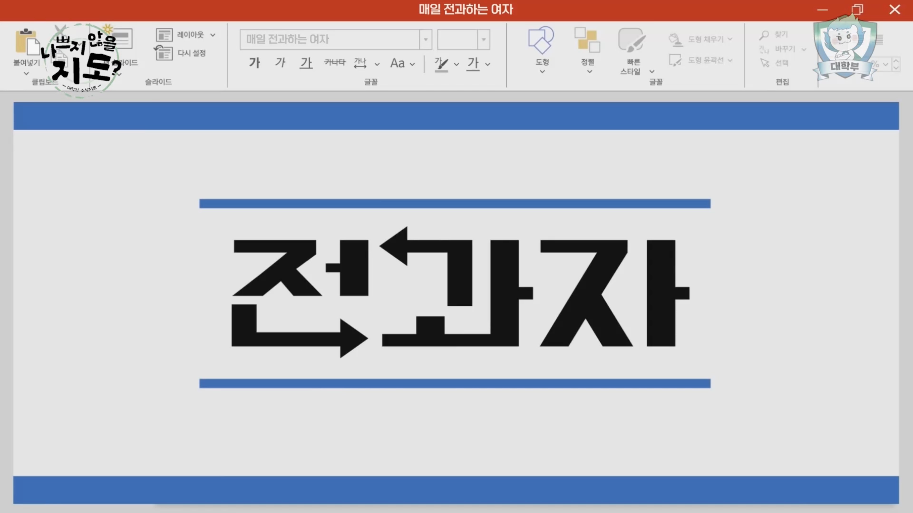
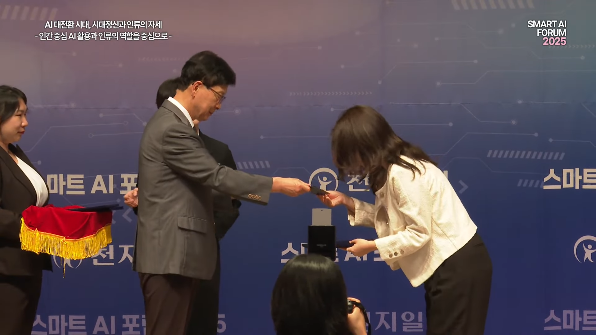

문화과는 대학 지역을 비롯하여 어느 부서에나 반드시 존재한다.
문화는 말 그대로 말씀이 이루어진 실체로서, 우리 모두가 하늘 문화 그 자체이며,
만국소성을 위하여 말씀을 전하여 열매를 맺는 과정, 하나님의 모든 역사를 기록하는 것 모두 문화이기 때문이다.
하여 만국소성이 이루어지는, 하나님의 역사가 끝나는 그 때
곧, 끝까지 남아있게 될 기능과는 문화과이다.
문화과는 이 문화 아카이브를 통하여 대학 지역의 역사도 기록하여 보존하지만,
더 나아가 문화과의 기록을 남겨 대학 지역의 문화가 영원히 유지되며
문화과가 존재함으로 부서 또한 발전했음을 알리고 더욱 발전될 수 있도록 하고자 한다.
문화부과장 취임식
41년 11월 25일
문화과의 개편으로 새로운 문화부과장이 세워졌다.
청년회 유스카_영상지원
41년 12월 27일
유스카 본 행사 시작 전 대기영상과 오프닝 영상의 3d모션그래픽 제작을 지원하였다.
대학 전과자 최초 방영
42년 1월 5일

대학 지역 최초로 기능과에 대한 홍보영상을 제작 및 방영하여 지역원들의 문화과에 대한 기대감과 관심이 꾸준히 이어졌다.
전도혁명 지시
42년 2월 13일
총회장님과 요한지파장님의 전도혁명 및 도구제작 지시로 대학 지역만의 도구를 제작하고 지역원들이 한 마음으로 도구를 사용하며 활동함으로 지역이 하나되가는 문화를 만들어내었다.
청년회 문화과 역량강화교육
42년 3월 1일
총 6회차의 교육을 통하여 하늘 문화의 가치와 정신을 깨달아가는 시간을 가졌다.
청년회 헌신예배_영상지원
42년 4월 6일
현장의 뜨거운 분위기를 담아내어 기록하였다.
대학 영상 인재양성교육
42년 4월 26일
대학 지역의 문화 유지와 발전을 위하여 영상작업 교육을 진행하였다.
청년회 천국가족 기도회_음향지원
42년 5월 3일
찬양단의 음성을 보다 잘 전달하여 성도들로 하여금 감동적인 분위기의 흐름이 끊이지 않도록 지원하였다.
청년회 문화과 디자인팀 인재양성교육
42년 5월 10일
실무적인 능력을 향상시키고 대학의 문화 발전을 위하여 교육을 청강하였다.
천지일보 제1회 대학생 숏폼 공모전 입상
42년 5월 16일

'Ai의 시대' 라는 주제의 공모전에서 3등으로 상장과 상여금을 받았다.
대학 기도회 감동영상
42년 5월 21일
혼자 전도하는 것이 아닌 주변의 지체들이 함께 전도하고 있음을 '함께'라는 spop으로 감동적인 뮤직비디오를 제작하였다.
이를 기도회에서 방영하여 감동의 흐름을 만들어내어 지역원들에게 지치지 않는 큰 힘을 불어넣어주었다.
대학 혜화 전도활동 참여
42년 5월 25일
대학 지역원들의 전도현장 가운데 함께하여 직접 제작한 도구를 사용해보며 한 마음이 되었다.
더불어 지역원들에게 문화과원들이 활동에 함께 참여함으로 선한 영향력을 끼쳤고,
다른 기능과들의 참여도 독려케 하는 새로운 문화의 한 회을 그었다.